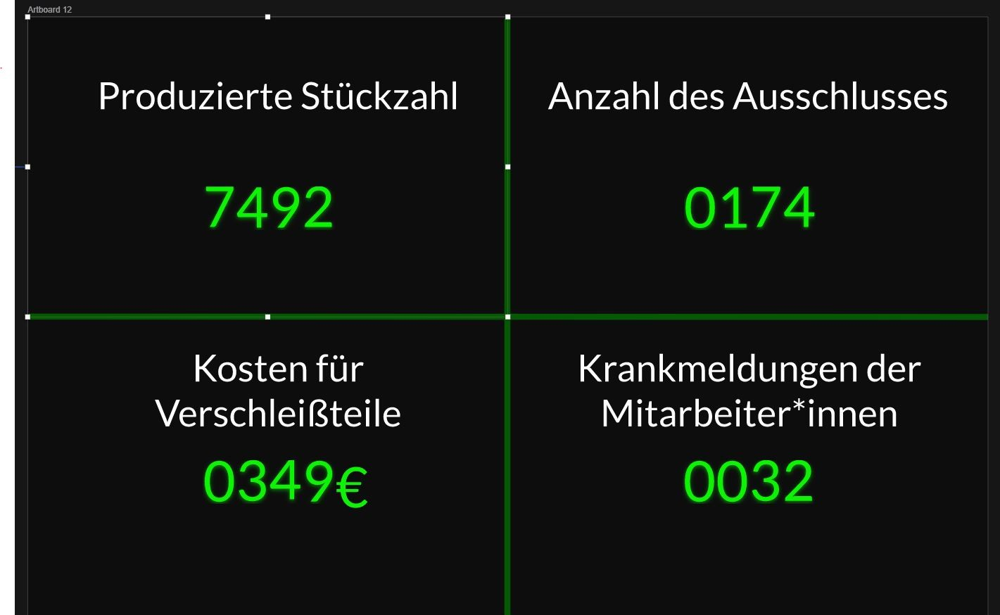

Prototyping Tool - InVision
1. Was sind die Kernfeatures von InVison?
- Invision ist eine Design-Entwicklungsplattform fpr High-Fidelity Web- und Mobile-Prototypen

- Quelle: invisionapp.com
- Besonders geeignet für das Arbeiten im Team
- Gemeinschaftliches Arbeiten an UI in Echtzeit
- Feedbackabgabe über Kommentarfunktion
- Geeignet für Brainstorming an digitalem Whiteboard

- Quelle: highfidelity.com
- Vektorbasierte Zeichenfunktionen und flexible Ebenen
- Möglichkeiten zur Synchonisation über DrioBox oder InVision Sync Tool
- Kunde hat die Möglichkeit zur Einsicht des Projektes
- Animation von Bezier Kurven

- Quelle: medium.muz.li
- Responsive verhalten lässi sich über "Pins" definieren und über den Punkt "Resizable" darstellen
- Schnelles Zurechtfinden für Einsteiger

- Quelle: medium.muz.li
2. Fidelity
Interaktivität
Visualisierung
- Hohe Visualisierung
- Beispiele erstellt mit InVision:

- Quelle: invisionapp.com
Inhaltsentwicklung
3. Komplexität
- Für Einsteiger*innen gut gemacht
- Darstellung ist intuitiv angelegt
4. Beispiele
- Da ich leider kein Beispiel für einen Prototypen gefunden habe, findet ihr im Folgenden weitere Gifs mit Ausschnitten von Prototypen
5. Grenzen
- keine Auswahl an Buttons
- Grafiken müssen außerhalb von InVision erstellt werden
- keine Möglichkeit einzelne Elemente zu animieren
Konzeptentwurf
Erste Entwurfphase
Grafische Darstellung
